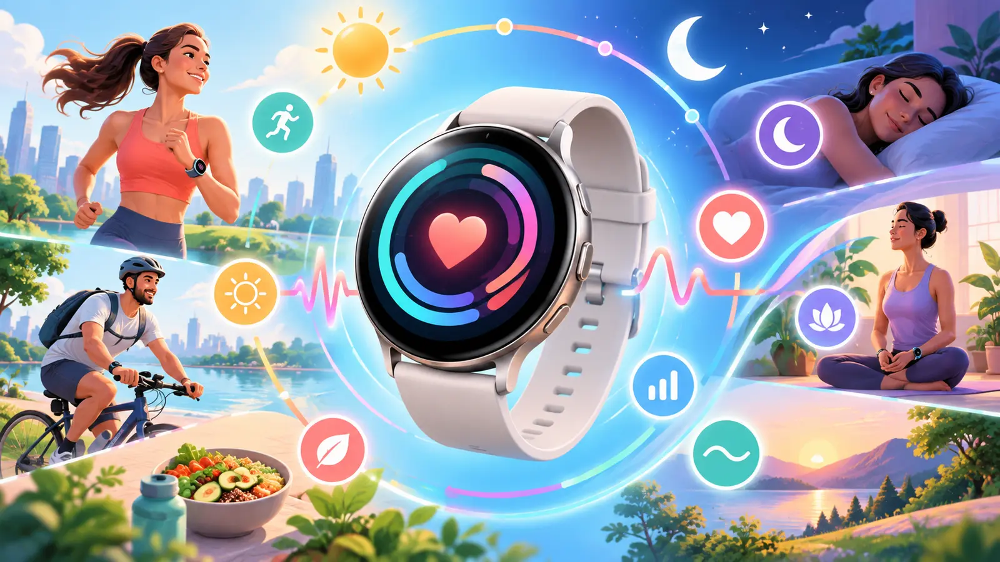
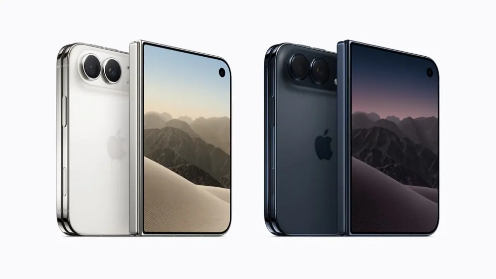

AI safety work is moving beyond the labs
Independent evaluators are taking a larger role as advanced models become harder to test, monitor, and contain.
Read report
Independent evaluators are taking a larger role as advanced models become harder to test, monitor, and contain.
Read report
Microsoft’s automatic, NPU-powered Super Resolution feature is expanding beyond Snapdragon hardware.
Read report
OWC’s latest release brings RAID 6 options, cross-platform improvements, and some important limits.
Read report
Series 12 and Ultra 4 keep familiar forms while collecting more frequent heart data and adding readiness insights.
Read report
A San Francisco event will bring Microsoft and NVIDIA leaders together around the next chapter of the PC.
Read report
A variable-aperture camera leads a Pro generation built around deliberate photography, sustained performance, and longer battery life.
Read report
Apple’s first folding iPhone combines a pocketable outer screen, its largest iPhone display, and an iOS experience made for two surfaces.
Read reportReports on CORE are independently rewritten from credited original reporting. Follow the source link in each article for the publisher’s complete coverage.